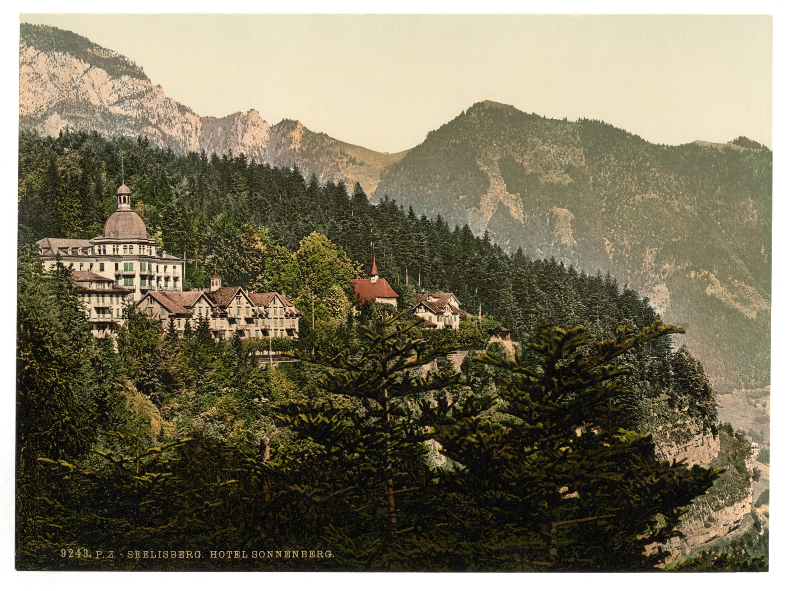

Historic photo
Sonnenberg (archive image)
A public-domain photochrom print offers a sense of the site’s scale and era—perfect for an “archive” angle.
data/events.json and data/places.json to update content.Story first, then detail. The structure is designed for credibility: claims are tied to sources, and photos include licensing/attribution.
Timeline entries encourage source links (public references + your internal archive).
Dedicated “Places” section helps visitors connect events to geography and atmosphere.
Simple JSON-driven content makes it easy to expand without rebuilding the layout.
Five anchor moments. Edit them freely (and add your deeper internal chronology).
Add photos of people and activities only when you have clear permission. Until then, landscapes and sites keep it respectful and safe.
A public-domain photochrom print offers a sense of the site’s scale and era—perfect for an “archive” angle.
Use the natural surroundings to set tone: quiet, clean, and distinctly Swiss—without relying on private images.